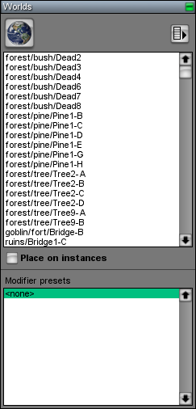

Worlds Page
From C4 Engine Wiki

The Worlds Page is a tool page in the World Editor that can be found under the Instance tab.
As shown in Figure 1, the Worlds Page contains tools that pertain to placing, selecting, and modifying instanced worlds.
The button in the upper-left corner with the world icon on it selects the instance placement tool. This tool is used for placing new instance nodes in the world that do not yet have any referenced world associated with them. Once a new instance node has been placed, the world to which it refers can be set by opening the Node Info window and setting a world name under the Instance tab. If the Show Instanced Worlds toggle button at the top of the World Editor is enabled, then the referenced world will appear in the scene when the Node Info window is closed. The name of the referenced world will also appear in the world list inside the Worlds Page.
Selecting an item in the world list is like selecting the instance placement tool, except that each new instance node placed in the world is preconfigured to refer to the world that is highlighted. This is useful for quickly placing many instances of the same referenced world in a scene. It is possible to select multiple items in the world list simultaneously by holding in the Shift key while clicking on them. When multiple worlds are selected, one is chosen at random each time you click in the scene to place a new instance node.
When each new instance node is placed in the scene, its transform is affected by the settings in the Placement Page. If the “Place on instances” box is checked, then the nodes belonging to instanced worlds already in the scene participate in determining where you clicked, and thus where a new instance should be placed. If this box is not checked, then clicks always pass through nodes belonging to instanced worlds as if they weren't there. Being able to uncheck this box is useful for placing objects like trees so that new trees are not accidentally placed on the branches of existing trees, but are instead always placed on the ground even if you click on an existing tree's geometry.
Modifier Presets
Each instance node can have a set of modifiers assigned to it that alter its appearance in some way. The set of modifiers assigned to any instance node in the scene can be saved as a modifier preset for easy application to new instances later. These presets are listed underneath the list of instanced world names, and there is a special preset called <none> that represents the empty set of modifiers.
When a modifier preset is selected, all new instance nodes receive a copy of the set of modifiers stored in the preset. The “Replace Modifiers” menu command (see below) can also be used to replace the sets of modifiers for all selected instance nodes with the modifiers belonging to the currently selected preset.
Modifier presets are created and deleted with the “New Modifier Preset” and “Delete Modifier Preset” menu commands, described below.
Menu Commands
The menu button in the upper-right corner displays a menu of commands when clicked.
|
Command |
Description |
|
Cleanup |
This command causes the world list to be updated so that it contains every distinct instanced world in the scene and only those worlds. Any world in the list that is not being used by an instance node in the scene is removed. |
|
Select All |
This command selects all instance nodes in the scene that refer to the highlighted world(s). Double-clicking on an item in the worlds list also selects all of the corresponding instance nodes in the scene. (This command is disabled is no worlds are selected in the worlds list.) |
|
Select Some… |
This command selects a certain percentage of all instance nodes in the scene referring to the highlighted world(s) to be selected at random. A dialog box appears to let you enter the percentage you would like to select. (This command is disabled is no worlds are selected in the worlds list.) |
|
Replace Instances |
This command causes all selected instance nodes in the scene to refer to the world highlighted in the world list. This is useful for quickly changing the world referenced by a large number of instance nodes. The same effect can also be accomplished by opening the Node Info window and changing the world name. (This command is enabled when exactly one world is selected in the worlds list.) |
|
Replace Modifiers |
This command causes the modifiers for all selected instance nodes in the scene to be replaced by the modifiers stored in the currently selected modifier preset. If the <none> modifier preset is selected, then this command causes the modifiers for all selected instance nodes to be deleted. |
|
New Modifier Preset |
This command allows the creation of a new modifier preset containing the modifiers that are assigned to the currently selected instance node. A dialog box appears in which the preset can be named. (This command is enabled when exactly one instance node is selected in the scene.) |
|
Delete Modifier Preset |
This command deletes the currently selected modifier preset. (The <none> modifier preset cannot be deleted.) |
Extractable Nodes
An instanced world may contain nodes having controllers that move them or change their state in some way, and these changes would need to be saved when users save their games. If the engine finds any controllers assigned to top-level nodes in the instanced world that return true from the Controller::InstanceExtractable() function, then all of the nodes are extracted from the instanced world and placed directly in the referencing world. (This only happens when a world is played, not in the editor.) The instance node is then deleted unless it has a controller itself. Any properties that were attached to the instance node are transferred to the first extractable node in the instanced world as it is being extracted. Likewise, any connectors in the referencing world that were connected to the instance node are transferred to the first extractable node in the instanced world.
When the world is saved (as a saved game), extracted nodes are saved as part of the main world so that they can be restored in the same state that they were in when the game was saved. In contrast, ordinary instanced worlds that don't contain any extractable nodes are simply saved as the instance nodes in the main world, and they are reloaded from the separate world resources when the main world is restored. (If an instance node remains after its nodes are extracted because it has a controller, then it does not generate a new instance when a saved game is restored.)
The built-in controllers that cause nodes to be extracted are the Rigid Body Controller, the Movement Controller, the Oscillation Controller, the Rotation Controller, and the Spin Controller.